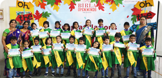
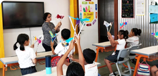

Birla Open Minds International School (BOMIS) - LB Nagar, under the guidance of
Birla Edutech Limited,
offers comprehensive solution for education that envelopes the
individual's learning period right from the formative
early years to K-12 schooling.
Read More

Pre-School
Children are enrolled into different programmes according to their age
: Pre - Nursery, Nursery, Kindergarten 1, Kindergarten 2
The thematic
curriculum for preschool draws on neuroscientific research on how the
brain learns naturally and what learning experiences are relevant at a
particular age and stage in life.

Primary-School
The Curriculum for grades 1-4 is thoughtfully planned to ensure that each child
at school enjoys these years in learning, discovery and creative engagement.
Research on how the brain learns best, developmental appropriateness, the theory
of Multiple Intelligences and the National Curricular Framework, 2005 have guided the planned curriculum.

Middle-School
At Open Minds, we emphasize on providing an inspiring school environment which
enables a shift from rote methods to a course beyond textbooks.The curriculum aims
to provide experiences and opportunities for students to think differently, analyze and
evaluate independently and foster a place where we can soften subject boundaries...

High-School
The Primary and Middle school approach of using experiential and student centric
methodologies continues in the Open Minds High School years. The transition is
smooth and allows the students to prepare for the school leaving certificate examinations.
At the High School stage the Open Minds Schools offer a variety of options to the students.